Spiralling the Spire
 The Needle
The Needle
First Ascent
WizzyGirl
10/2/2026
First Redpoint
Maninawhitesuit
22/2/2026
Buffs Used

Description
Start on the far side from the beaconhouse and climb up to the standable ledge with a nettle on it (the last bit requires some confident handwork and plenty of chalk) before working your way to the Edelweiss flower (pic 1).
After that, work your way clockwise around the tower (grab the backpack along the way), avoiding the chimney as it's far too difficult to exit in my experience. Instead, keep going clockwise (pic 2), and work your way up, until you get to the next standable ledge, at which point you can either keep going clockwise (there seems to be a route that way but I can't verify for sure), or switch tack and start heading counterclockwise for a moment before powering straight up through a series of difficult overhangs and smooth regions.